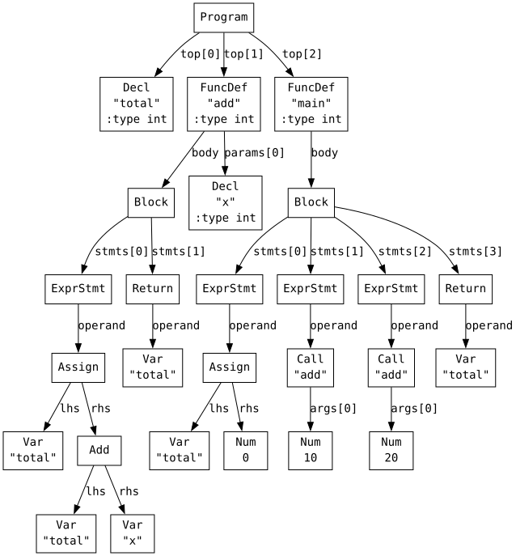
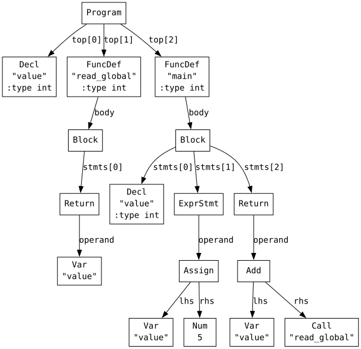
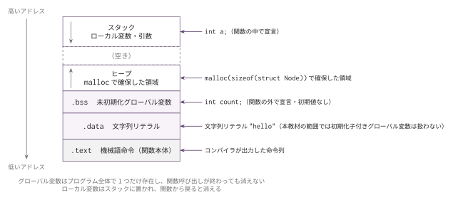
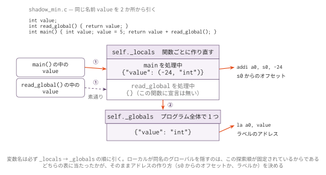
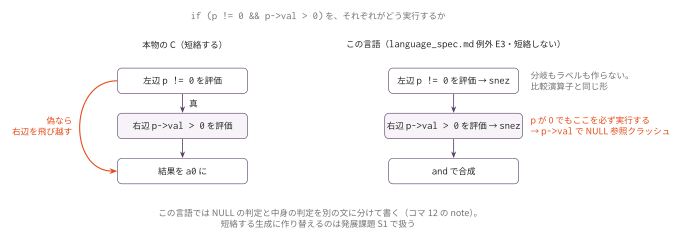

コマ13: グローバル変数・スコープ管理
今日のゴール
関数外で宣言されたグローバル変数を扱い、ローカル変数とグローバル変数が混在するプログラムを動かす。
コマ12までは、変数はすべて関数内のローカル変数としてスタックフレーム上に置いていた。 この回では、関数の外にある変数をプログラム全体から参照できるようにする。
int total;
int add(int x) {
total = total + x;
return total;
}total は関数の外で宣言されているため、グローバル変数である。
add() の中からも main() の中からも同じ total を参照する。
この回で扱う範囲
対象にする機能は次の通り。
| 種類 | 例 |
|---|---|
| グローバル変数 | int count; |
| グローバル構造体変数 | struct Pair gp; |
| ローカルによる隠蔽 | グローバル x とローカル x |
| スコープ探索 | local scopes → globals |
言語仕様に初期化子はない。グローバル変数はすべて 0 に初期化されることが 保証されており（ポインタなら null）、初期値が必要なら代入文で設定する。
この回までの言語仕様（EBNF）
この回までに書けるプログラムの文法を、累積の形でまとめる。
記法と最終形の全体像は
language_spec.md の「形式文法（EBNF）」を参照。
この回で、構文は最終形と完全に一致する。 コマ14 で増えるのは前処理指令だけである。
この回で書ける #include は提供物の lib.h の取込みだけで、
自作ヘッダと入れ子の取込み、#define はコマ14 で扱う。
include_dir ::= '#' 'include' '"' FILENAME '"' NEWLINE
stars ::= '*' { '*' }
scalar_type ::= 'int' [ stars ]
| 'char' [ stars ]
| 'void' stars
| 'struct' IDENT stars
obj_type ::= scalar_type
| 'struct' IDENT
ret_type ::= scalar_type
| 'void'
type_name ::= obj_type
program ::= external_decl { external_decl }
external_decl ::= struct_decl
| var_decl
| func_proto
| func_def
struct_decl ::= 'struct' IDENT '{' field_decl { field_decl } '}' ';'
| 'struct' IDENT ';'
field_decl ::= scalar_type IDENT ';'
var_decl ::= obj_type IDENT ';'
param ::= scalar_type IDENT
param_list ::= param { ',' param }
func_proto ::= ret_type IDENT '(' [ param_list [ ',' '...' ] ] ')' ';'
func_def ::= ret_type IDENT '(' [ param_list ] ')' func_body
func_body ::= '{' { var_decl } { stmt } '}'
stmt ::= expr_stmt
| block
| if_stmt
| while_stmt
| for_stmt
| 'break' ';'
| 'continue' ';'
| 'return' [ expr ] ';'
expr_stmt ::= [ expr ] ';'
block ::= '{' { stmt } '}'
if_stmt ::= 'if' '(' expr ')' stmt [ 'else' stmt ]
while_stmt ::= 'while' '(' expr ')' stmt
for_stmt ::= 'for' '(' [ expr ] ';' [ expr ] ';' [ expr ] ')' stmt
expr ::= assign_expr
assign_expr ::= unary_expr '=' assign_expr /* 右結合 */
| cond_expr
cond_expr ::= binary_expr [ '?' expr ':' cond_expr ]
binary_expr ::= unary_expr { bin_op unary_expr }
bin_op ::= '*' | '/' | '%'
| '+' | '-'
| '<' | '>' | '<=' | '>='
| '==' | '!='
| '&&'
| '||'
unary_expr ::= postfix_expr
| '-' unary_expr
| '!' unary_expr
| '*' unary_expr
| '&' unary_expr
| '++' unary_expr
| '--' unary_expr
| 'sizeof' '(' type_name ')'
postfix_expr ::= primary_expr { postfix_suffix }
postfix_suffix ::= '[' expr ']'
| '.' IDENT
| '->' IDENT
primary_expr ::= INT_LITERAL
| CHAR_LITERAL
| STRING_LITERAL
| IDENT '(' [ arg_list ] ')'
| IDENT
| '(' expr ')'
arg_list ::= assign_expr { ',' assign_expr }この回までの二項演算子の優先順位（高い順）:
| 優先順位 | 演算子 | 結合 |
|---|---|---|
| 1（高） | * / % |
左 |
| 2 | + - |
左 |
| 3 | < > <= >= |
左 |
| 4 | == != |
左 |
| 5 | && |
左 |
| 6 | \|\| |
左 |
表の読み方はコマ1の「木の形は規則で決まっている」と
language_spec.md の「演算子」を参照。
グローバル変数は external_decl に var_decl が加わっただけである。
var_decl の形はローカル宣言と同一で、どちらであるかは書かれた位置だけで決まる。
&& と || はこの回で入るが、短絡評価はしない。
字句トークンの定義はどの回でも同じであるため、ここでは繰り返さない。
language_spec.md の「字句トークン」を参照。
AST を確認する: グローバル変数
まず、関数外の変数宣言が AST でどう見えるか確認する。
python3 scaffold/parse_viewer.py sessions/13_globals_scope/tests/global_min.cこのプログラムの内容は次の通り。
int total;
int add(int x) {
total = total + x;
return total;
}
int main() {
total = 0;
add(10);
add(20);
return total;
}実行すると、次のようなS式が表示される。
(program (decl "total" :type int)
(funcdef "add" :type int
(params (param "x" :type int))
(block
(exprstmt
(assign (var "total")
(add (var "total") (var "x"))))
(return (var "total"))))
(funcdef "main" :type int (params)
(block
(exprstmt
(assign (var "total") (num 0)))
(exprstmt
(call "add"
(args (num 10))))
(exprstmt
(call "add"
(args (num 20))))
(return (var "total")))))
トップレベルにある (decl "total" :type int) がグローバル変数宣言である。
同じ 'Decl' ノードでも、関数本体のブロック内にあればローカル変数、トップレベルにあればグローバル変数として扱う。
AST を確認する: ローカル変数による隠蔽
次に、同じ名前のグローバル変数とローカル変数がある例を見る。
python3 scaffold/parse_viewer.py sessions/13_globals_scope/tests/shadow_min.cこのプログラムの内容は次の通り。
int value;
int read_global() {
return value;
}
int main() {
int value;
value = 5;
return value + read_global();
}実行すると、次のようなS式が表示される。
(program (decl "value" :type int)
(funcdef "read_global" :type int (params)
(block
(return (var "value"))))
(funcdef "main" :type int (params)
(block (decl "value" :type int)
(exprstmt
(assign (var "value") (num 5)))
(return
(add (var "value")
(call "read_global" (args)))))))
main() の中の value はローカル変数である。
一方、read_global() の中にはローカル変数 value がないので、グローバル変数 value を参照する。
グローバル変数の置き場所
ローカル変数は関数呼び出しごとに作られるため、スタックフレームに置く。 グローバル変数はプログラム全体で1つだけ存在し、関数呼び出しが終わっても残る。 そのため、スタックではなくデータ領域に置く。
アセンブリでは、主に次の2つのセクションを使う。
| セクション | 用途 |
|---|---|
.bss |
グローバル変数（0 初期化された領域） |
.data |
文字列リテラル |
たとえば、次の宣言を考える。
int count;この回の実装では、おおよそ次のように出力する。
.bss
.globl count
count:
.zero 4.zero 4 は 4 バイトぶんのゼロ領域を確保する指定である。
.bss セクションは OS がプログラム開始時に 0 埋めするため、
「グローバル変数は 0 で始まる」という言語仕様の保証が
追加のコードなしでそのまま実現できる。

ローカル変数はスタック、malloc で確保した領域はヒープ、グローバル変数は .data / .bss に置かれる。
どの領域に置くかが決まると、アドレスの計算方法（s0 からのオフセットか、ラベルか）も決まる。
グローバル変数のアドレス
ローカル変数のアドレスは、これまで通り s0 からのオフセットで計算する。
addi a0, s0, -24グローバル変数にはアセンブリ上のラベルを付ける。
そのため、アドレスは la で取得できる。
la a0, totalしたがって self.codegen_lval_Var(node) では、self._is_local() を使って変数がローカルかグローバルかで分岐する。
def codegen_lval_Var(self, node):
if self._is_local(node.name):
off = self._locals[node.name][0]
self.emit(f" addi a0, s0, {off}")
else:
self.emit(f" la a0, {node.name}")値を読む処理は同じである。
まず lvalue としてアドレスを求め、その型に応じて lw、lb、ld でロードする。
変数表を2種類に分ける
コマ12までは self._locals という辞書にローカル変数だけを入れていた。
コマ13では、グローバル変数用の表をもう1つ持つ。
# インスタンス変数として持つ
self._globals: dict[str, str] # name → ty_str（コマ13で追加）
self._locals: dict[str, tuple[int, str]] # name → (offset, ty_str)（コマ8 のまま）self._locals の形はコマ8 で (offset, ty_str) のタプルになって以来変わらない。
グローバル変数はスタック上に置かないのでオフセットを持たず、型だけを覚える。
self._globals はプログラム全体で1つだけ持つ。トップレベルの宣言を self.collect_globals(prog) で集めてからコード生成に入る。
self._locals は関数ごとに1つ持ち、self._reset_func_state() で関数に入るたびに空にする。1関数につき1つの辞書で済む。
変数名を探すときは、まず self._locals を調べ、なければ self._globals を調べる。
def lookup_var_ty(self, name, line):
if name in self._locals:
return self._locals[name][1]
if name in self._globals:
return self._globals[name]
raise RuntimeError(f"[line {line}] 未定義の変数: '{name}'")アドレスの作り方はローカルとグローバルで違うので、
型の問い合わせ（lookup_var_ty）とアドレス生成（codegen_lval_Var）を分けて書く。
どちらがローカルかの判定はスケルトンの self._is_local(name) を使う。
この順序が、次の節で見る「ローカル変数による隠蔽」の仕組みそのものである。
ローカル変数によるグローバル変数の隠蔽
C では、ブロックごとにスコープが作られる。
int x;
int main() {
int x;
x = 5;
return x;
}この main() の中の x は、グローバル変数 x とは別の変数である。
main() の中で x と書いたときは、内側のローカル変数を優先して参照する。
スキャフォールドでは関数ごとに1つの self._locals 辞書を持つ。
同じ名前の変数が既に self._locals にあっても、新しい宣言なら上書きせずエラーにする（または新しいオフセットで登録する）。
変数探索は常に self._locals → self._globals の順なので、ローカルがグローバルを隠す動作が自然に実現される。

self._locals は関数ごとに作り直すため、read_global() を処理しているときは空である。
同じ value という名前でも、そこでは self._globals に当たり、アドレスは la で取る。
オフセットの割り当ては、関数本体を走査して各ローカル変数のオフセットを先に決めておく。
残りの演算子 ! && ||
この回で最後の演算子3つを足す。どれも結果は 0 か 1 の int である。
| ノード | ハンドラ | 生成の要点 |
|---|---|---|
'Not' |
codegen_Not |
operand を評価し、seqz a0, a0 |
'And' |
codegen_And |
両辺を評価し、それぞれ snez で 0/1 にしてから and |
'Or' |
codegen_Or |
両辺を評価して or を取り、snez で 0/1 にする |
&& と || は短絡しない（language_spec.md 例外 E3）。
左辺の値にかかわらず右辺も評価するので、分岐を作る必要はなく、
比較演算子と同じ「両辺を評価してから合成する」形で書ける。

そのぶん p != 0 && p->val > 0 のような書き方はできず、NULL の判定と中身の判定は文を分ける。
短絡する版は発展課題 S1 で扱う。
文字列収集とプログラム全体の出力
この回はグローバル変数を扱うため、main() の処理が「文字列を集める → .data → .bss → .text」
という並びになる。そこで、コマ10 まで main() に直接書いていた
「各 FuncDef の本体から文字列を集める」ループを collect_all_strings(prog) に、
セクションを順に出す部分を gen_program(prog) に切り出す。
emit_data_section() はコマ10 で実装したものをそのまま継承して使う。
この回で書き直す必要はない（スケルトンにも再宣言は無い）。
グローバル変数のための .bss は emit_bss_section() として新しく書く。
もう1つ、collect_strings_expr() のディスパッチをこの回で整理する。
! && || が増えて二項演算のハンドラがさらに2つ必要になるが、
Assign / Add / … / Index / And / Or の走査はどれも
「node.lhs と node.rhs を再帰的に見る」という同じ形である。
そこで、この形のものを _collect_strings_binary_expr(node) 1つにまとめ、
ディスパッチをそこへ振り替えてある。
この整理により、コマ11 で書いた二項演算ごとのハンドラ
（collect_strings_expr_Add など）はコマ13 以降は呼ばれなくなる。
削除はしなくてよい（継承したまま残しておいて構わない）。
collect_strings_expr_Str / _Neg / _Cond / _Call（コマ10〜11）と
collect_strings_expr_Member（コマ12）は、形が違うのでこれまで通り使われる。
この教材は普段、前回までのハンドラをそのまま継承し新しいノード種別の分だけ
書き足す「積み上げ」で進める。ここはその方針の部分的な例外である。
コマ11では collect_strings_expr_Add / _Sub / _Mul / … と種類ごとに
1つずつハンドラを書いたが、コマ13 で && || が増えて同じ形の走査が
さらに2つ必要になった時点で、「形が同じものは重複させずに1箇所へまとめる」
判断を優先した。結果として、コマ11 で書いた15個の per-kind ハンドラ
（Assign / Add / Sub / Mul / Div / Mod / Eq / Ne / Lt / Le / Index
など二項演算に対応するもの）は、collect_strings_expr() のディスパッチが
_collect_strings_binary_expr() を直接呼ぶように書き換わったことで、
コマ13 以降は実行経路から外れる。バグではなく、「継承で積み上げる」設計と
「同じ形のコードは重複させない」設計が衝突した箇所で、後者を優先した
トレードオフだと理解しておく。
編集するファイル
sessions/13_globals_scope/ 以下のスケルトンファイルを編集する。
| ファイル | 実装するハンドラ・メソッド |
|---|---|
mycc.py |
Codegen13 クラスと main()。下の一覧の11個 |
| (AST パーサ) | 変更不要（'Decl' ノードはコマ12から存在する） |
実装対象は、スケルトンの raise NotImplementedError が置かれている次の11個である。
| # | 実装対象 | 役割 |
|---|---|---|
| 1 | lookup_var_ty(name, line) |
self._locals → self._globals の順に型を引く |
| 2 | codegen_lval_Var(node) |
ローカルは s0 からのオフセット、グローバルは la |
| 3 | codegen_Not(node) |
operand を評価し seqz |
| 4 | codegen_And(node) |
両辺を評価し、snez してから and（短絡しない） |
| 5 | codegen_Or(node) |
両辺を評価して or を取り、snez（短絡しない） |
| 6 | collect_globals(prog) |
トップレベルの 'Decl' の名前と型を self._globals に登録する |
| 7 | collect_all_strings(prog) |
各 FuncDef の本体から文字列を集める |
| 8 | _collect_strings_binary_expr(node) |
二項演算の node.lhs / node.rhs を走査する |
| 9 | emit_bss_section() |
グローバル変数を .bss に出力する（.zero で 0 初期化） |
| 10 | gen_program(prog) |
.data → .bss → .text の順に出し、FuncDef だけ gen_func() する |
| 11 | main() |
parse_file() で AST を作り、6・7・10 を呼ぶ |
スケルトンにあらかじめ書かれているものは次の通りで、実装対象ではない。
| 提供済み | 役割 |
|---|---|
parse_file(filename) |
前処理・構造体定義の収集・字句解析・構文解析をまとめて行う |
_is_local(name) |
変数がローカルかどうかの判定 |
type_of_expr_Var / type_of_lval_Var / type_of_expr_Not / _And / _Or |
型は lookup_var_ty に任せるか int を返すだけなので提供済み |
collect_strings_expr_Not / _And / _Or |
8 番のハンドラ等へ振り分けるだけ |
_type_of_expr() / _type_of_lval() / codegen_lval() / codegen() / collect_strings_expr() のディスパッチ |
新しいノード種別の分岐は既に書かれている |
emit_data_section() |
コマ10 で実装済み。継承してそのまま使う |
実装手順
- コマ12の実装を
sessions/13_globals_scope/mycc.pyに反映する
（スケルトンのimportlib継承により、前回のCodegenクラスを継承する。新機能の handler だけを実装すればよい。） self._globalsとself._localsを確認する（self._globalsの追加はスケルトンにあらかじめ書かれている）- トップレベルの
'Decl'ノードをcollect_globals()で集める（覚えるのは名前と型だけでよい） lookup_var_ty()をself._locals→self._globalsの順にするcodegen_lval_Var()でself._is_local()を使って分岐し、グローバル変数ならla a0, nameを出すemit_bss_section()でグローバル変数を.bssに出力する（全て 0 初期化）collect_all_strings()と_collect_strings_binary_expr()を実装する（文字列収集の入口と、二項演算の走査）gen_program()で.data→.bss→.textの順に出力する（.dataは継承したemit_data_section()を呼ぶだけでよい）main()からparse_file()→collect_globals()→collect_all_strings()→gen_program()を呼ぶcodegen_Not()/codegen_And()/codegen_Or()を実装する（&&||は短絡しない）global_min.c、global_counter.c、global_init.c、shadow_min.c、global_local_shadow.c、global_struct.c、logical_ops.cを通す
tests/
| ファイル | 内容 | 期待値 |
|---|---|---|
global_min.c |
グローバル total を関数から更新する最小形 |
30 |
global_counter.c |
グローバル call_count / total と printf |
stdout 60, exit 3 |
global_init.c |
0 初期化保証（代入せず読み始められる） | 12 |
shadow_min.c |
同名のローカル変数とグローバル変数の最小形 | 5 |
global_local_shadow.c |
ローカル変数がグローバル変数を隠す | 5 |
global_struct.c |
グローバル構造体変数と . / & |
30 |
logical_ops.c |
! && \|\| の結果が 0/1 であること・短絡しないこと |
40 |
テスト
python3 scaffold/test_runner.py sessions/13_globals_scopetests/global_min.c がコンパイルでき、終了コード 30 になれば基本形は成功。
個別に動かす場合は、次のようにする。
python3 sessions/13_globals_scope/mycc.py sessions/13_globals_scope/tests/global_min.c \
| riscv64-linux-gnu-gcc -x assembler -static - -o out
qemu-riscv64 ./out
echo $?注意
言語仕様に初期化子はない。int total = 0; とは書けず、グローバル変数は .bss に置いて
すべて 0 に初期化される（ポインタなら null）。初期値が必要なら代入文で設定する。
変数表の探索順は self._locals → self._globals の順に固定する。
同名のローカル変数があればそちらが優先され、グローバル変数は隠される。
アドレスの作り方が2通りになる。ローカル変数は s0 からのオフセット、
グローバル変数は la a0, name である。codegen_lval_Var() で self._is_local() を見て分ける。
&& と || は短絡しない（language_spec.md 例外 E3）。
左辺が偽でも右辺を必ず評価するので、p != 0 && p->val > 0 のような書き方はできない。
分岐は作らず、比較演算子と同じ「両辺を評価してから合成する」形で書く。
! && || の結果は必ず 0 か 1 にする。
ここまでで着手できる発展課題
グローバル変数・スコープまで学んだので、複合代入（x += 3 など、左辺は1回だけ評価）に
意味を足す L2 に着手できる。
生成したアセンブリでグローバル変数のアドレスの作り方を1命令ずつ確認したいときは、RV64 シミュレータ に貼り付ける。
この回の完成形に相当する OCaml 版参考実装が ../../workbook/ocaml/README.md にある。完成相当の実装なので、まず自分の実装方針を検討してから確認すること。